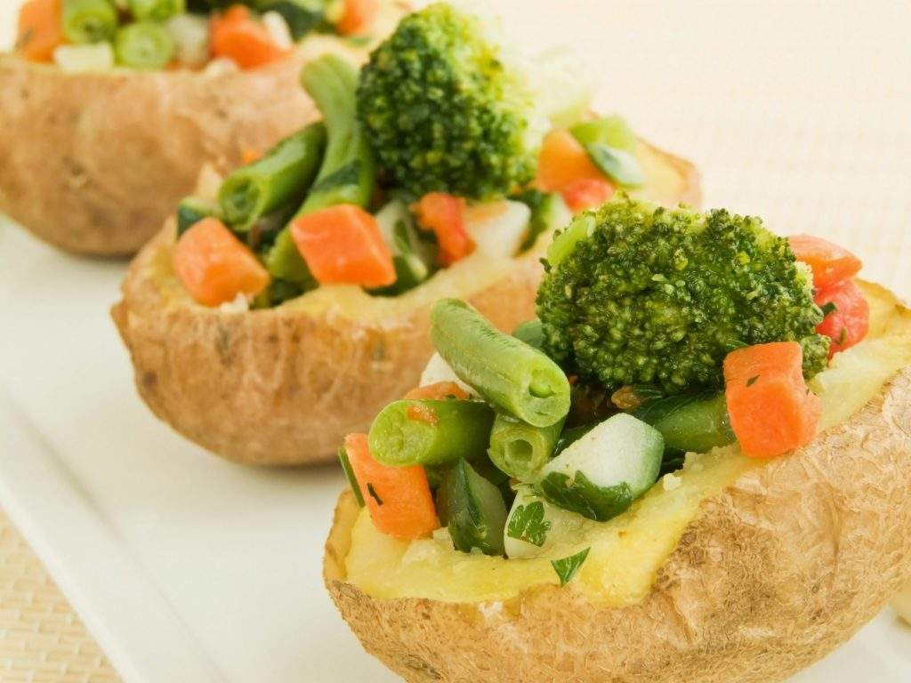

Conteúdo Semanal
Novos conteúdos toda semana, sempre ótimas dicas para você
LAZER NO PARQUE
Uma ótima opção de lazer é aproveitar a natureza, visitando algum parque próximo,
onde possa relaxar e realizar uma caminhada.
Uma breve caminhada em áreas verdes, como parques e jardins, pode melhorar significativamente a saúde mental,
trazendo benefícios para o humor e a autoestima, de acordo com um estudo feito pela Universidade de Essex,
no Reino Unido.
EXERCÍCIOS SIMPLES E RÁPIDOS
A dica de hoje é uma pequena série de exercícios básicos que podem ser feitos em casa,
sem ocupar muito tempo, mas resultando em bons benefícios ao seu corpo e dando mais energia para encarar a semana.
FLEXÃO DE BRAÇO: A flexão é um exercício que se realizado corretamente trabalha vários grupos musculares ao mesmo tempo.
Os principais músculos recrutados durante a flexão de braço são: peitoral maior, deltoide posterior e tríceps.
3 SÉRIES COM 15 REPETIÇÕES CADA.
DESCANSE ENTRE 45 E 60SEG DE UMA SÉRIE A OUTRA
AGACHAMENTO: O agachamento é um exercício incrivelmente eficaz para tonificar glúteos, coxas e até panturrilhas.
3 SÉRIES COM 15 REPETIÇÕES CADA.
RECEITA SAÚDAVEL
Receita de batata recheada com legumes.
Ingredientes
• 3 batatas
• 1 xícara (chá) de brócolis cozido picado
• 1 cenoura cozida picada
• 6 vagens cozidas picadas
• Sal a gosto
• Salsa picada a gosto
• 3 colheres (sopa) de creme de ricota
• 3 colheres (sopa) de ervilha fresca
Modo de preparo
1. Lave bem as batatas e cozinhe com casca sem que amoleçam demais.
2. Espere esfriar e corte uma fatia no comprimento de cada batata.
3. Retire parte da polpa, formando uma concha.
4. Misture a batata retirada com os legumes cozidos e tempere com sal e salsa.
5. Coloque a ricota e a ervilha e cubra com uma porção de legumes.
6. Envolva-as em papel-alumínio e leve ao forno por 15 minutos.